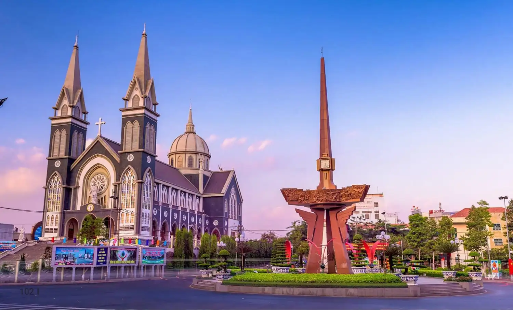

HELLO, IT'S NICE TO MEET YOU

Bình Dương là một tỉnh thuộc vùng Đông Nam Bộ, Việt Nam.Bình Dương là một tỉnh nằm ở vị trí chuyển tiếp giữa sườn phía nam của dãy Trường Sơn, nối nam Trường Sơn với các tỉnh đồng bằng sông Cửu Long,
là tỉnh bình nguyên có địa hình lượn sóng từ cao xuống thấp dần từ 10m đến 15m so với mặt biển.
Bình Dương là một tỉnh nằm ở vị trí chuyển tiếp giữa sườn phía nam của dãy Trường Sơn, nối nam Trường Sơn với các tỉnh đồng bằng sông Cửu Long,
là tỉnh bình nguyên có địa hình lượn sóng từ cao xuống thấp dần từ 10m đến 15m so với mặt biển.
Bình Dương là một vùng đất thuộc vùng Đông Nam Bộ, nằm cách trung tâm thành phố Hồ Chí Minh khoảng 30km về phía Bắc. Từ bao đời nay Bình Dương là một vùng đất trù phú nhờ con sông Sài Gòn chảy nặng phù sa.
Nơi đây tập trung nhiều loại trái cây nhiệt đới và món ăn dân dã nhưng không kém phần đặc biệt và thú vị.
Chỉ dùng những nguyên liệu đơn giản nhưng khi qua bàn tay chế biến tài hoa của người dân nơi đây lại trở thành những món ăn đặc sản Bình Dương vô cùng lôi cuốn. Như bánh bèo bì, bò nướng ngói, lẩu bò nhúng mắm...
Nếu có cơ hội đi du lịch Bình Dương thì nhớ ghé qua địa chỉ sau đây để khám phá trọn vẹn nét đẹp ẩm thực nơi này nhé.
Chỉ cần một lần đặt chân đến mảnh đất Bình Dương, mọi du khách đều sẽ bị mê hoặc bởi thiên nhiên núi rừng hùng vĩ, con người thân thiện và nhiều món ăn hấp dẫn.
Và điều mà nhiều du khách cảm thấy tò mò nhất chắc hẳn là đặc sản Bình Dương phải không nào? Vậy vùng đất này có những món ăn nào có thể khiến du khách hấp dẫn đến như vậy!
Hãy để VN Foods giúp bạn hiểu hơn về văn hoá ẩm thực nơi đây nhé!